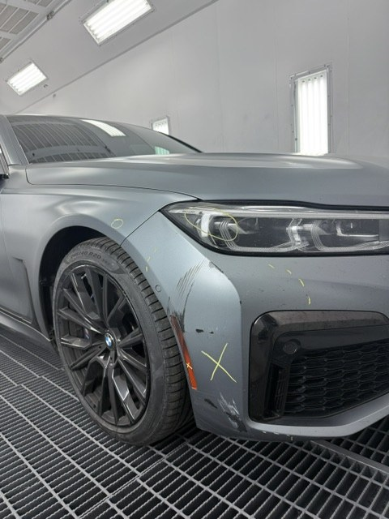
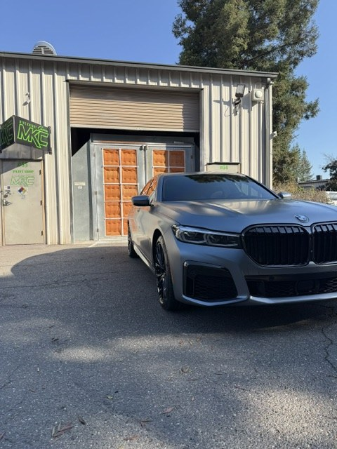

Discipline 01 · Refinish
Invisible Color Match
Factory paint codes get you close. They don't account for a decade of California sun, or the batch variance the car left the plant with. We read the vehicle's actual color with a spectrophotometer, formulate to the instrument's numbers, and spray test cards until the match is verified before a panel is touched.
Then the color is blended across adjacent panels, not stopped at the repair line. Insurers often approve paint for the damaged panel alone, a recipe for visible mismatch. We fight for the refinish hours that make the transition disappear.
- Formulation
- Instrument-Read · Batch Corrected
- Transition
- Blended · Undetectable in Sunlight
- Gloss Standard
- Factory Spec